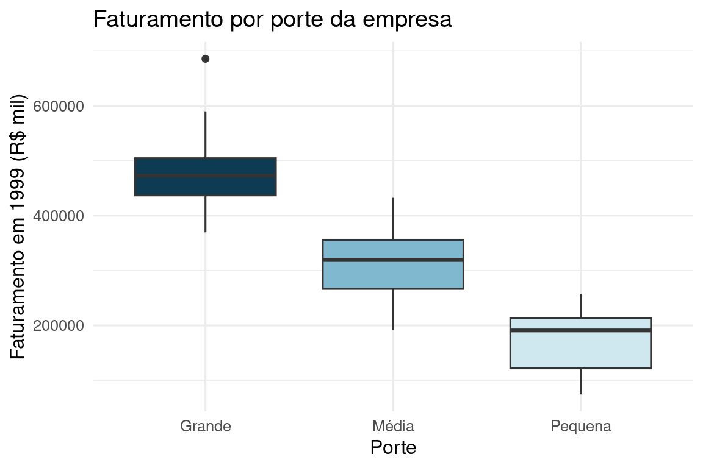

1.5 Medidas de dispersão: amplitude, quantis, variância e coeficiente de variação
Duas distribuições podem ter a mesma média e serem completamente diferentes na variabilidade dos dados em torno dela. Medir “quão espalhados” os dados estão é tão importante quanto medir o centro, e é, sistematicamente, a parte que relatórios populares de economia mais omitem.
Duas ações têm o mesmo retorno médio anual de 12%. Uma delas variou entre 8% e 16% ao longo dos últimos 5 anos; a outra, entre -30% e 45%. Você as consideraria igualmente atraentes?
Dois municípios têm a mesma renda per capita média. Em um deles, quase todo mundo ganha perto dessa média; no outro, há uma elite que ganha 50 vezes a média e uma maioria que ganha bem menos. A renda média, sozinha, distingue esses dois cenários?
Amplitude total. A diferença entre o maior e o menor valor:
\[ AT = x_{\max} - x_{\min}. \]
É simples, mas extremamente sensível a um único valor extremo, uma única empresa atípica infla a \(AT\) inteira sem dizer nada sobre as outras 105.
1.5.1 Quantis, distância interquartílica e boxplot
O quantil (ou percentil) de ordem \(p\) (\(0<p<1\)), \(Q_p\), é o valor abaixo do qual está uma proporção \(p\) dos dados. Os quartis (\(Q_1=Q_{0{,}25}\), \(Q_2=Q_{0{,}50}=\) mediana, \(Q_3=Q_{0{,}75}\)) dividem a amostra ordenada em quatro partes iguais. A mediana (Seção 1.4) é só o caso particular \(p=0{,}5\) de um algoritmo geral, válido para qualquer percentil, que vale a pena registrar em três passos:
- Ordene os \(n\) valores em ordem crescente.
- Calcule \(k = \dfrac{P \cdot n}{100}\), em que \(P\) é o percentil desejado (por exemplo, \(P=25\) para \(Q_1\)).
- Se \(k\) for inteiro, o percentil é a média entre o \(k\)-ésimo e o \((k+1)\)-ésimo valor ordenado; se \(k\) não for inteiro, arredonde \(k\) para cima e o percentil é o valor que ocupa essa posição.
Para os dados já ordenados \(18, 21, 23, 24, 28\) (\(n=5\)):
- \(Q_{50}\): \(k = 50\times5/100 = 2{,}5\), não inteiro, arredonda para cima \(\to\) posição 3 \(\to Q_{50}=23\) (a mediana, coerente com a fórmula da Seção 1.4).
- \(Q_{25}\): \(k = 25\times5/100 = 1{,}25\), não inteiro, arredonda para cima \(\to\) posição 2 \(\to Q_{25}=21\).
x_pct <- c(18, 21, 23, 24, 28)
quantile(x_pct, probs = c(0.25, 0.5), type = 2) # type=2: replica o algoritmo dos 3 passos## 25% 50%
## 21 23Algumas leituras equivalentes de quartil, úteis como checagem rápida na hora da prova: “\(Q_1\) é o valor abaixo do qual estão 25% dos dados” é o mesmo que dizer “acima de \(Q_1\) estão 75% dos dados”; “entre \(Q_1\) e \(Q_3\) estão os 50% centrais dos dados” é o mesmo que dizer que \(Q_1\) e \(Q_3\) marcam, respectivamente, onde termina o primeiro quarto e onde começa o último quarto da amostra ordenada.
A distância (ou amplitude) interquartílica
\[ IQR = Q_3 - Q_1 \]
mede a dispersão dos 50% centrais dos dados, sendo por isso muito mais robusta a valores extremos que a amplitude total, não depende dos valores mínimo e máximo.
## 0% 25% 50% 75% 100%
## 74392.0 256230.5 327898.0 397744.8 685430.0O boxplot (diagrama de caixa) representa visualmente \(Q_1\), \(Q_2\), \(Q_3\), e os limites além dos quais um ponto é considerado um outlier, convencionalmente \(Q_1 - 1{,}5 \times IQR\) e \(Q_3 + 1{,}5 \times IQR\):
ggplot(empresas, aes(x = porte, y = faturamento99, fill = porte)) +
geom_boxplot(show.legend = FALSE) +
scale_fill_manual(values = c("Pequena" = "#cfe8ef", "Média" = "#7fb8cf",
"Grande" = "#0d3b54")) +
labs(x = "Porte", y = "Faturamento em 1999 (R$ mil)",
title = "Faturamento por porte da empresa") +
theme_minimal(base_size = 12)
1.5.2 Quando AT e IQR não bastam: cidades A e B
Duas cidades registraram a temperatura (°C) em 5 dias:
\[ \text{Cidade A: } 24,\ 26,\ 32,\ 28,\ 25 \qquad\qquad \text{Cidade B: } 20,\ 26,\ 36,\ 28,\ 25 \]
Ambas têm a mesma média: \(\bar x_A = (24+26+32+28+25)/5 = 135/5 = 27\) e \(\bar x_B = (20+26+36+28+25)/5 = 135/5 = 27\). Se a análise parasse na média, as duas cidades seriam indistinguíveis. Tentando a amplitude total: \(AT_A = 32-24=8\) e \(AT_B=36-20=16\), já sugere B mais dispersa. Mas o \(IQR\), calculado com o algoritmo de três passos da seção anterior sobre cada cidade ordenada (\(A: 24,25,26,28,32\); \(B: 20,25,26,28,36\), ambas com \(n=5\)), dá \(Q_1=25\), \(Q_3=28\) em ambas, logo \(IQR_A=IQR_B=3\): o \(IQR\), por olhar só para o “miolo” da distribuição, não enxerga a diferença que a \(AT\) já tinha detectado. É hora de uma medida que use todas as observações, não só duas posições.
O primeiro instinto é somar os desvios de cada valor em relação à média, \(x_i - \bar x\):
temp_A <- c(24, 26, 32, 28, 25); temp_B <- c(20, 26, 36, 28, 25)
desvios_A <- temp_A - mean(temp_A); desvios_B <- temp_B - mean(temp_B)
desvios_A; sum(desvios_A)## [1] -3 -1 5 1 -2## [1] 0## [1] -7 -1 9 1 -2## [1] 0Em ambas, os desvios somam exatamente zero, e isso não é coincidência: \(\sum_i(x_i-\bar x)= \sum_i x_i - n\bar x = n\bar x - n\bar x = 0\) sempre, para qualquer conjunto de dados. A média dos desvios brutos é, por construção, uma medida inútil de dispersão, ela é sempre zero, tanto para dados concentrados quanto espalhados. É exatamente para contornar esse cancelamento que a variância eleva os desvios ao quadrado antes de somar, o que também tem o efeito colateral de penalizar desvios grandes proporcionalmente mais que desvios pequenos:
## [1] 9 1 25 1 4## [1] 8## [1] 49 1 81 1 4## [1] 27.2Os desvios quadráticos de A são \((-3)^2,(-1)^2,5^2,1^2,(-2)^2 = 9,1,25,1,4\), que somam \(40\) e dão média \(8\); os de B são \((-7)^2,(-1)^2,9^2,1^2,(-2)^2=49,1,81,1,4\), que somam \(136\) e dão média \(27{,}2\). Logo
\[ \mathrm{Var}(A) = 8 \quad\Rightarrow\quad dp(A) = \sqrt{8} \approx 2{,}83\ ^\circ\text{C}. \]
\[ \mathrm{Var}(B) = 27{,}2 \quad\Rightarrow\quad dp(B) = \sqrt{27{,}2} \approx 5{,}22\ ^\circ\text{C}. \]
c(var_A = mean(desvios2_A), dp_A = sqrt(mean(desvios2_A)),
var_B = mean(desvios2_B), dp_B = sqrt(mean(desvios2_B)))## var_A dp_A var_B dp_B
## 8.000000 2.828427 27.200000 5.215362O desvio padrão de B é quase o dobro do de A, exatamente o que a \(AT\) já indicava e o \(IQR\) havia escondido: a cidade B tem dias muito mais extremos (mínima de 20°C, máxima de 36°C) intercalados com dias parecidos com A, enquanto a cidade A oscila de forma mais comportada em torno da mesma média. Duas cidades com o “clima médio” idêntico podem ter uma completamente mais arriscada para quem planeja, por exemplo, uma agenda de eventos ao ar livre, e só a variância revela isso.
1.5.3 Desvio padrão, variância e coeficiente de variação
A variância mede a dispersão média dos dados em torno da média, em unidades ao quadrado:
\[ \mathrm{Var}(X) = \frac{1}{n}\sum_{i=1}^n (x_i - \bar{x})^2. \]
O desvio padrão devolve a medida à escala original dos dados:
\[ dp(X) = \sqrt{\mathrm{Var}(X)} = \sqrt{\frac{1}{n}\sum_{i=1}^n (x_i - \bar{x})^2}. \]
A fórmula acima, com divisor \(n\), é a variância descritiva (às vezes chamada populacional): resume a dispersão dos dados que você tem em mãos, sem pretender estimar nada além deles. Quando os mesmos \(n\) valores são vistos como uma amostra de uma população maior e o objetivo é estimar a variância populacional, usa-se o divisor \(n-1\) (correção de Bessel), \(s^2 = \frac{1}{n-1}\sum_i (x_i-\bar x)^2\), o padrão da Inferência Estatística, e também o default da função
var() do R. Nesta disciplina, que é de estatística descritiva e
probabilidade, o divisor \(n\) é o usado nas provas e listas, seguindo o fórmulário oficial; fique
atento a essa diferença em disciplinas futuras de inferência/econometria (Wooldridge (2016)).var_n <- function(x) mean((x - mean(x))^2) # divisor n, usado neste curso
dp_n <- function(x) sqrt(var_n(x))
c(var_n = var_n(empresas$faturamento99), dp_n = dp_n(empresas$faturamento99),
var_R = var(empresas$faturamento99)) # var() do R usa divisor n-1## var_n dp_n var_R
## 11086337503.7 105291.7 11191921670.4O desvio padrão tem a mesma unidade da variável original (R$ mil), o que o torna interpretável, mas isso também é um problema quando se quer comparar a dispersão de variáveis em unidades diferentes, ou com médias muito diferentes. O coeficiente de variação,
\[ CV(X) = \frac{dp(X)}{\bar{x}}, \]
remove essa unidade e permite comparação direta:
empresas |>
summarise(
cv_faturamento = dp_n(faturamento99) / mean(faturamento99),
cv_empregados = dp_n(empregados99) / mean(empregados99)
)## # A tibble: 1 × 2
## cv_faturamento cv_empregados
## <dbl> <dbl>
## 1 0.315 1.121. Retome a pergunta de abertura desta seção sobre as duas ações com retorno médio de 12%, uma variando entre 8-16% e outra entre -30-45%. Que medida de dispersão você usaria para quantificar essa diferença de risco, e por que a amplitude total, sozinha, poderia ser enganosa se um dos 5 anos fosse um evento atípico (uma crise, por exemplo)?
2. Um gestor de risco reporta apenas o desvio padrão mensal de um fundo ("2%"). Baseado só nesse número, é possível saber se há meses de perdas catastróficas raras escondidos numa distribuição majoritariamente estável? Que outra informação (ainda não vista, mas pode arriscar um palpite) ajudaria a responder isso?
3. Compare o boxplot de faturamento por porte com um hipotético gráfico que só mostrasse a média de faturamento por porte, sem nenhuma medida de dispersão. Que decisão de política de crédito mudaria ao ver o boxplot completo, em vez de só as três médias?
4. O \(IQR\) e o desvio padrão respondem, ambos, "quão dispersos são os dados", mas de formas diferentes. Construa (mentalmente ou em papel) um conjunto de dados pequeno em que os dois discordem bastante sobre qual de dois grupos é "mais disperso". O que causa essa discordância?
5. Um artigo de jornal econômico afirma que "o Brasil é mais desigual que a Argentina" citando apenas a renda média per capita dos dois países. Que medida de dispersão (e por quê) seria indispensável para essa afirmação fazer sentido?